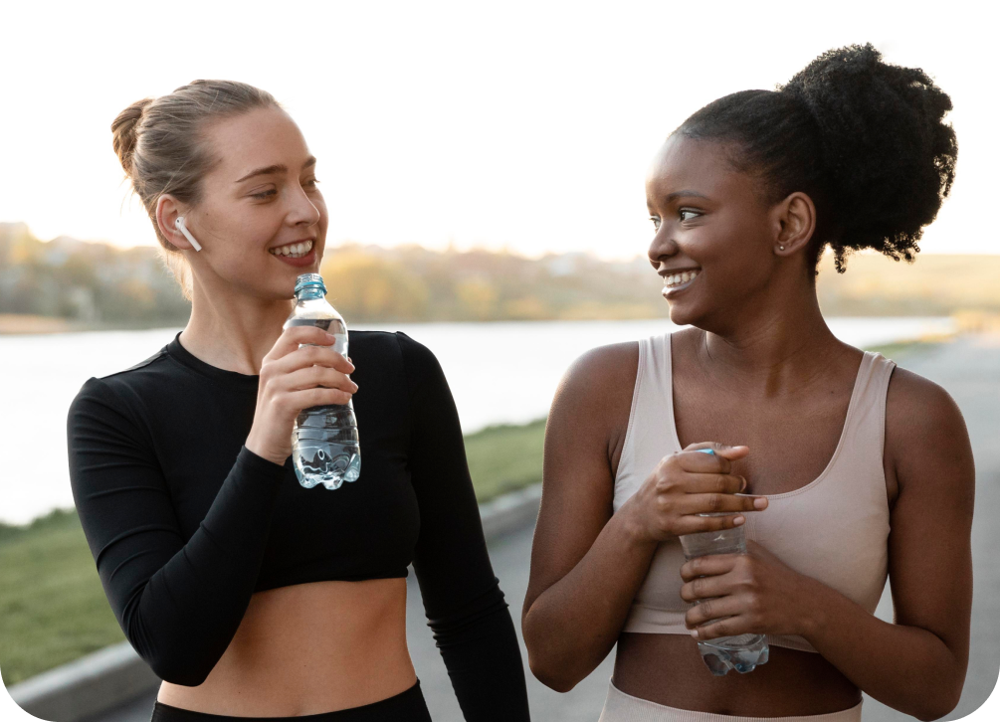

Quote of the day
A lot of times I find that people who are blessed with the most talent don't ever develop that attitude, and the ones who aren't blessed in that way are the most competitive and have the biggest heart.
Tom Brady
The World Health Organization recommends at least 150 minutes of moderate-intensity aerobic physical activity throughout the week for adults aged 18-64. However, what happens if we adjust that number to 110 minutes every day? While it might seem like a high number to hit, dedicating 110 minutes daily to sporting activities may offer unparalleled benefits to physical health, mental well-being, and overall quality of life.